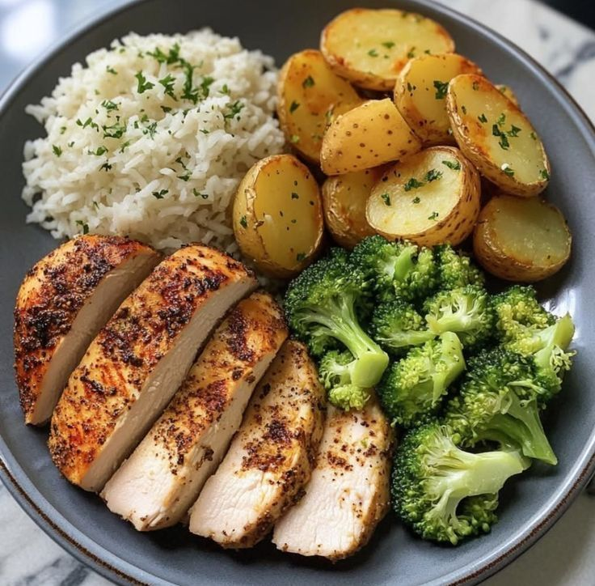
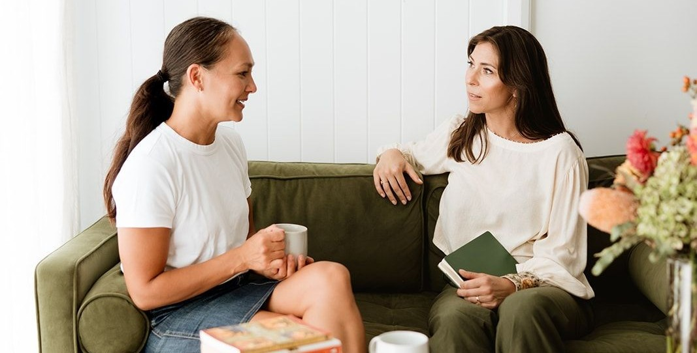

Alimentação na rotina
Um planejamento que considera o seu dia a dia.

COMER MELHOR · SENTIR MELHOR · VIVER MELHOR
Um espaço para conhecer uma proposta de acompanhamento que considera seus objetivos, sua rotina e sua relação com a alimentação.
Comida boa.
Mais cuidado.
Uma rotina
com você ♡
COMO POSSO AJUDAR
Um olhar para a organização da alimentação no seu dia a dia.
Espaço para conversar sobre diferentes fases e necessidades.
Uma área de cuidado a explorar na avaliação individual.
Acompanhamento que considera a sua rotina de treinos.
Planejamento considerando o seu contexto e histórico.
Uma proposta de atenção a diferentes momentos da vida.
SOBRE MIM
Neste conceito, o atendimento começa pela escuta: conhecer a rotina, entender as prioridades e construir um acompanhamento individualizado.
Este espaço será substituído pela apresentação, formação e registro profissional da nutricionista.
Vamos nos conhecer →Bons hábitos.
Uma rotina
mais sua ♡
NÚMEROS ILUSTRATIVOS · DEMONSTRAÇÃO
PROGRAMAS EM DESTAQUE
EXPERIÊNCIAS DE CUIDADO
Espaços para relatos autorizados. Nenhum depoimento real foi incluído.
Este espaço receberá um relato real sobre a experiência de acompanhamento, mediante autorização.
Este espaço receberá um relato real sobre a experiência de acompanhamento, mediante autorização.
Este espaço receberá um relato real sobre a experiência de acompanhamento, mediante autorização.
NUTRIÇÃO EM PAUTA

EM BREVE
Espaço reservado para futuros conteúdos revisados pela profissional.
EM BREVE
Novos artigos serão publicados aqui.
PERGUNTAS FREQUENTES
Respostas demonstrativas. O conteúdo será ajustado conforme a rotina de atendimento da profissional.
Ainda tem dúvidas? Fale comigo →É uma conversa para conhecer sua rotina, seus objetivos e sua relação com a alimentação. Duração e valores serão confirmados no agendamento.
A proposta contempla as duas modalidades. A disponibilidade será confirmada ao agendar.
Se você tiver exames ou relatórios recentes, vale levá-los ou enviá-los. A profissional orienta o que for necessário no primeiro contato.
A frequência é definida de forma individual, conforme seus objetivos e sua rotina.
Sim. A proposta parte da escuta: objetivos, rotina e histórico orientam o planejamento.
Pelo botão “Agende uma consulta”. Neste projeto demonstrativo, o agendamento ainda não está disponível.
LOCALIZAÇÃO
Um espaço acolhedor para conversar sobre sua rotina. As informações serão atualizadas após a confirmação do endereço.
Agende uma consulta →Rua, número e bairro serão informados aqui.
Dias e horários a definir com a profissional.
Disponibilidade a confirmar no agendamento.
Localização a confirmar
Uma conversa para conhecer seus objetivos e apresentar a proposta de acompanhamento.
Mais cuidado.
Mais leveza.
Mais você ♡